scRNA-Seq细胞通讯之《iTalk学习手册》
原文：https://mp.weixin.qq.com/s?__biz=MzAwMzIzOTk5OQ==&mid=2247528921&idx=1&sn=7584797c68f0e979112b6dd2e4e30f14&chksm=9b3c0889ac4b819f4380d6e7c3a116b39102f946283328180515c84286b4adc93341b05150cd#rd 合集：单细胞教程全收录
一、写在前面
1、这次介绍的是一个基于R语言的细胞通讯分析工具——iTALK，这是Biomamba目前用起来觉得对用户比较友好的工具，上手非常容易，分析步骤非常少，很少遇到bug。不过缺点就是功能少、只内置人类配受体对，其它的数据来源需要进行同源转化，目前也没什么更新与维护。对之对应的是，这篇文章目前仍仅发表在预印刊上，未被其它期刊正式接收(距离其2019年1月发表在预印刊上，已经过去了六年)。感兴趣的同学可以看一下原文，如果iTALK已经SCI见刊，也欢迎评论区留言。
https://www.biorxiv.org/content/10.1101/507871v1
2、计算资源
本教程基于Linux中的Rstudio环境演示，计算资源不足的同学可参考： 足够支持你完成硕博生涯的生信环境 独享服务器，生信分析不求人 为实验室准备一份生物信息学不动产
3、单细胞基础
如果你还没有单细胞基础，建议你扫一遍生信基地122篇单细胞教程全索引。 如果你希望有人领着你学习单细胞，不妨看看：25年最新视频|《手把手教你做scRNA-seq数据基础分析》。
4、更多细胞通讯教程
二、细胞通讯与iTalk
肿瘤细胞与肿瘤微环境（TME）中其他细胞之间的相互作用在肿瘤进展、转移以及耐药性中扮演着至关重要的角色。作者介绍了 iTALK，一种基于计算的方法，用于表征和展示多细胞肿瘤生态系统中的细胞间通讯信号，利用单细胞 RNA 测序数据。iTALK 原则上可以用来解剖细胞间通讯的复杂性、多样性和动态变化，涵盖广泛的细胞过程。 肿瘤微环境（TME）已成为调节肿瘤进展、免疫逃逸以及抗肿瘤治疗耐药机制的重要因素。TME 包含多种细胞类型，例如肿瘤细胞、多种类异质的免疫细胞，以及非免疫的基质成分。肿瘤细胞与这些非肿瘤成分之间进行动态的协调和相互作用，彼此间的相互信号被认为提供了指导和促进肿瘤细胞生长与迁移的关键信号。通过这种细胞间通讯，肿瘤细胞能够在其他 TME 细胞（如肿瘤相关成纤维细胞、巨噬细胞和 T 细胞）中引发显著的表型变化，并对 TME 进行重编程，从而逃避免疫监视以促进其生存。因此，更好地理解细胞间通讯信号可能有助于识别新的调节治疗策略，从而更好地造福患者。然而，由于缺乏有效的数据分析和可视化的生物信息学工具，这一研究进展受到限制。作者介绍了 iTALK（识别和展示细胞间信号网络的变化；https://github.com/Coolgenome/iTALK），这是一个开源的 R 包，旨在从单细胞 RNA 测序数据（scRNA-seq）中分析和可视化配体-受体介导的细胞间相互作用信号（见图 1 和在线方法）。作者展示了 iTALK 可以成功应用于 scRNA-seq 数据，捕捉到高度丰富的配体-受体基因（或转录本）对，识别细胞间相互作用的增减变化，并追踪纵向样本中细胞间通讯信号的动态变化。值得注意的是，作者精心编制的 iTALK 配体-受体数据库会自动为配体-受体基因添加功能注释，且结果可以通过作者高效的数据可视化工具以不同格式进行展示，该工具是 iTALK 的一部分。这种方法适用于从数百个到数万个细胞的数据集，并且不受限于测序平台。值得一提的是，除了研究 TME，iTALK 还可以应用于涉及细胞间通讯的广泛生物医学研究领域。
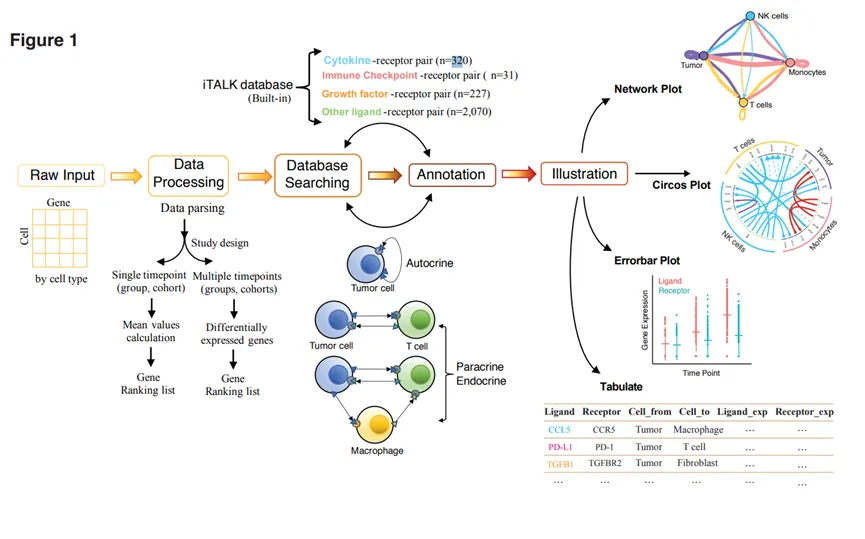
图 1.iTALK的生物信息学工作流程及其输出图示格式。iTALK以单细胞RNA测序的细胞-基因表达矩阵作为输入。根据研究设计对数据矩阵进行处理。已知的配体和受体基因被筛选、配对并通过内置的配体-受体数据库进行功能注释。最终，输出结果可以通过数据可视化工具（该工具作为iTALK的一部分实现）以不同格式进行可视化。配体-受体结合是邻近细胞和远离细胞之间信号转导的主要形式之一。为了表征配体-受体介导的细胞间相互作用，作者首先基于之前的研究手动整理了一个独特的配体-受体基因对列表，并将其作为 iTALK 的内置数据库。这一数据库收录了 2,648 对非冗余的已知互动配体-受体对，并根据配体的主要功能将其进一步分类为四类：细胞因子/趋化因子、免疫检查点基因、成长因子和其他（见图 1 和在线方法）。该数据库将定期更新，用户也可以选择输入自己的基因列表或自定义基因类别。由于不同的细胞类型可能对同一配体具有不同的受体，并且可能诱导不同的反应，反之亦然，iTALK 在分析数据时将每一对不同的配体-受体视为独立事件。而且，由于功能上的异质性，同一配体-受体结合在不同类型/表型的细胞中可能会引发独特的细胞反应，与其遗传身份无关。因此，单细胞 RNA 测序数据是确定哪种细胞类型/表型表达哪种配体或受体，并帮助更准确地绘制细胞间通讯网络的理想平台。
三、iTalk介绍
iTALK 以单细胞 RNA 测序（scRNA-seq）数据中的细胞-基因表达矩阵作为输入。表达数据可以是原始数据或经过标准化的数据。数据矩阵将根据研究设计进行解析和处理。对于在单一时间点或单一组/队列中收集的数据集，iTALK 可以通过生成排序基因列表来识别高度表达的配体-受体对，然后使用 iTALK 数据库进行配体和受体的搜索和配对。对于在多个时间点进行纵向收集的数据集，或包含多个遗传学/组织学不同的亚组或队列的数据集，iTALK 可以通过查找和排序差异表达的配体和/或受体，识别组间的显著变化，即互动的增加或减少（见图 1）。iTALK 结合了常用的算法进行批次效应修正和差异基因表达分析（见在线方法），同时允许用户根据数据的特点选择最适合的方法。iTALK 还是一种高效的数据可视化工具。iTALK 的输出可以以多种格式进行可视化，包括网络图、circos 图、误差条形图，同时数值也可以以表格形式导出（见图 1-2）。网络图通过分别标记网络中每两种不同细胞类型之间检测到的配体-受体相互作用的前向（从信号细胞到靶细胞）和后向信号数量来进行展示。它还测量每种细胞类型内的自分泌信号。网络图的节点按细胞类型进行颜色编码，边按比例缩放并标记信号细胞和靶细胞之间的相互作用数量（见图 2a）。Circos 图显示每对配体-受体基因的名称，并展示每个相互作用的方向。用户可以选择在 circos 图中显示哪些细胞类型、基因类别和相互作用数量（见图 2b-c）。Circos 图的外环显示细胞类型，内环显示每个相互作用的配体-受体对的详细信息，两者均使用颜色编码。Circos 图内部的线条和箭头按比例缩放，以分别指示配体和受体的相对信号强度，同时使用不同颜色和类型的线条来描绘图 2 中所示的各种可能的变化。它可以展示在单一时间点或组/队列场景中高表达的配体-受体信号（见图 2b-c），或展示两个或多个时间点或亚组/队列之间变化最大（增加或减少）的配体-受体相互作用（见图 2d-e）。对于大多数配体-受体介导的相互作用，配体似乎只有在与其受体结合时才能发挥作用。因此，作者预计当受体表达缺失（或减少）时，无论其配体的表达水平如何，相互作用都会丧失（或减少），反之亦然。误差条形图用于展示多个时间点中特定感兴趣的配体-受体对的动态变化（见图 2f）。所有带有注释信息的 iTALK 数值也可以以表格形式导出（见图 1），用户可以通过排序/筛选来选择某些相互作用以进行进一步的下游分析或自定义绘图。
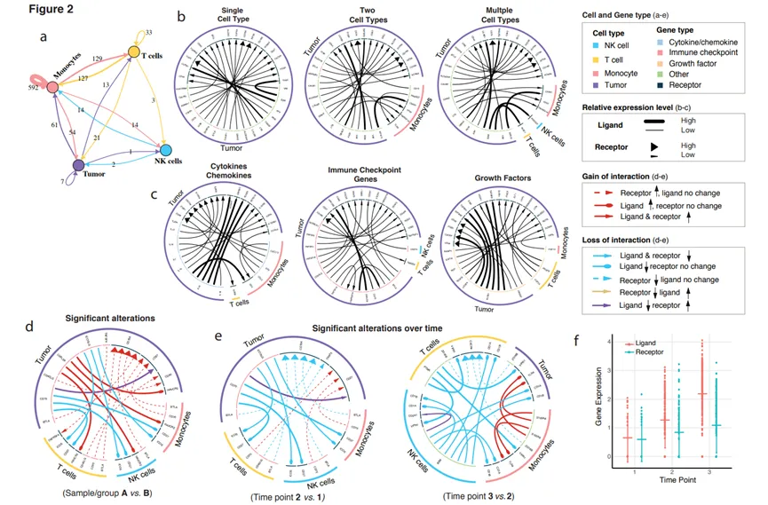
图2. iTALK输出结果的不同格式可视化。a.网络图展示了不同细胞类型之间以及同一细胞类型内检测到的配体-受体相互作用数量；b-c.Circos图展示了单一时间点、组或队列中前20个高表达的配体-受体相互作用；d. Circos图展示了包括两个亚组或队列的研究；e. 用于纵向研究，展示了细胞相互作用的显著变化；f.误差条形图展示了特定配体-受体对在多个时间点的动态变化。 作者已成功将iTALK应用于内部生成和公开下载的多个单细胞RNA测序（scRNA-seq）数据集。这种方法可以应用于从数百到数十万个细胞的数据集，并且不受测序平台的限制。除了研究肿瘤微环境（TME）外，作者预计iTALK还可以应用于涉及细胞间通讯的广泛生物医学研究领域，以帮助剖析复杂的细胞间信号网络。 数据库与注释 内置数据库是根据之前的成果3-10手动整理的。将基因列表合并并去除重复项，以创建一个非冗余的配体-受体列表。该数据库总共包含2648个独特的配体-受体相互作用对。作者根据配体的已知功能，将它们进一步分为四类：细胞因子/趋化因子（n=320）、免疫检查点（n=31）、生长因子（n=227）和其他（n=2070）。作者预计将定期更新数据库，以确保其时效性。除了内置数据库外，用户还可以选择输入自己的配体-受体基因列表。用户还可以根据需要自定义基因类别。输入数据格式、数据解析、过滤、去除批次效应。输入数据应为细胞基因表达矩阵，并为每个细胞注释细胞类型或表型。原始数据应根据质量控制指标进行过滤。默认标准是过滤出在少于3个细胞中检测到的基因，以及细胞中计数非零的基因少于200个的细胞。如果细胞中超过15%的计数来自线粒体基因组，则这些低质量细胞也将被丢弃。对于可能存在批次效应的测序数据，可以使用scde11和monocle12（已集成到iTALK中）来消除它们。识别显著的相互作用 作者集成了多种算法来识别显著的相互作用（差异表达的配体和受体），包括常用的R包：DESeq214、scde11、monocle12、DEsingle15、edgeR16和MAST17。用户可以灵活选择最适合其数据集的方法。所有这些方法都要求输入数据为原始数据，不进行任何过滤或标准化。考虑到单细胞测序数据有时可能包含数千或数万个细胞，作者还提供了Wilcoxon方法，以加快数据处理速度。Wilcoxon方法的输入数据可以是原始数据或处理过的数据。在找到高表达或差异表达的基因后，这些基因将与作者的配体-受体数据库进行匹配和配对，以识别显著的配体-受体相互作用。为了识别信号传递相互作用的变化，会评估配体和受体的表达水平。作者定义“交互作用的增加”为：如果配体（或受体）基因上调，并且其配对基因上调或保持不变，则认为交互作用增强。作者定义“交互作用的丧失”为：如果配体（或受体）基因下调，不论其配对基因的表达水平如何，均视为交互作用丧失。图示。网络图、Circos图和误差条形图均采用了颜色编码，用户可以选择自己喜欢的颜色（例如，用于细胞类型、基因类别、变化强度和方向等）。此外，用户可以选择显示的细胞类型数量（如肿瘤细胞、T细胞、NK细胞、巨噬细胞、成纤维细胞等）或基因类别（如细胞因子/趋化因子、免疫检查点、生长因子及其他），以及Circos图和网络图中显示的相互作用数量（前30、50、100或全部）。网络图是基于R包igraph18生成的；Circos图是基于包circlize19绘制的；误差条形图则是基于ggplot220创建的。示例数据集 作者的示例数据集由内部生成。这些数据通过Seurat13进行了过滤和标准化。细胞类型的定义基于已知的标记物。简而言之，B细胞通过CD79A、CD79B和MS4A1进行识别；T细胞通过CD3D/E进行识别；CD8 T细胞通过CD3D/E和CD8A进行识别；NK细胞通过CD45、NKG7和GZMA进行分类；单核细胞则通过CD68、CD163和S100A8/9进行识别。作者应用了Wilcoxon方法来寻找不同组之间的显著相互作用。代码可用性 代码和内置数据库可以在GitHub上公开获取，网址为https://github.com/Coolgenome/iTALK
四、学习手册 所见即所得


学习手册以html文件格式提供，可在浏览器中打开并翻阅学习：
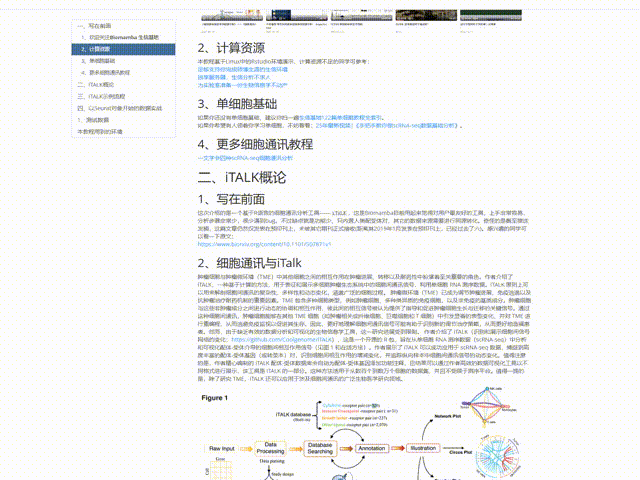
文末下载链接中包含的内容：
测试文件约7**. 51GB**，大家注意按需下载！
scRNA-Seq细胞通讯之《iTalk学习手册》
下载链接:
https://pan.baidu.com/s/1VdtWdJwhrfQwwKjMjspMkw?pwd=ags7
提取码: ags7

五、代码实操
(一)、iTALK实操
1、安装
# 安装devtools
if(!require(devtools)) install.packages("devtools");
# 安装iTALK，连接不上GitHub的同学可能需要科学上网
if(!require(iTALK)) devtools::install_github("Coolgenome/iTALK", build_vignettes =TRUE)
# 看看是否能正常加载：
library(iTALK)
2、载入数据
# 案例数据来自10X的PBMC数据，作者进行了downsample。我们已经把这个数据集给大家下载好了
# 读取：
data<-read.table('data/example_data.txt',sep='\t',header=T,stringsAsFactors = F)
# 看一下数据结构：
data[1:4,1:4]
## MIR1302.10 FAM138A OR4F5 RP11.34P13.7
## 1506 0 0 0 0
## 1502 0 0 0 0
## 1060 0 0 0 0
## 1098 0 0 0 0
- *
# 注意，数据的最后一列包含了细胞注释信息：data[1:4,(ncol(data)-4) : ncol(data)]
## BAGE5 CU459201.1 AC002321.2 AC002321.1 cell_type
## 1506 0 0 0 0 cd56_nk
## 1502 0 0 0 0 cd14_monocytes
## 1060 0 0 0 0 cd56_nk
## 1098 0 0 0 0 b_cells
可以看到这是一个列名为基因名的count数据，但normalization的数据也支持分析
3、筛选高表达基因
-
-
-
-
-
- *
-
-
-
-
# 首先通过表达平均值筛选出高表达的50%基因参与下游计算：highly_exprs_genes<-rawParse(data, top_genes=50,# top的百分比而非数量 stats='mean')# 可以选均值mean或中位数median
# 包含基因、平均表达量、对应的细胞类型：head(highly_exprs_genes)
## gene exprs cell_type
## 1 MALAT1 5.973592 cd56_nk
## 2 B2M 5.237566 cd56_nk
## 3 TMSB4X 4.912785 cd56_nk
## 4 GNLY 4.898929 cd56_nk
## 5 RPS27 4.793295 cd56_nk
## 6 RPL10 4.529574 cd56_nk
4、筛选高表达基因中配受体对
*
library(dplyr)
# 基于刚才的高表达基因列表，可进一步进行配受体对的搜集：
# 这是作者生成的分组：
comm_list<-c('growth factor','other','cytokine','checkpoint')
# 细胞对应的颜色：
cell_col<-structure(c('#4a84ad','#4a1dc6','#e874bf','#b79eed', '#ff636b', '#52c63b','#9ef49a'),names=unique(data$cell_type))
# 设置画布布局
par(mfrow=c(1,2))
# 定义空数据接受输出结果：
res<-NULL
# 循环筛选每种细胞通讯类型中的配受体对：
for(comm_type in comm_list){
# 计算当前细胞通讯类型中存在的配受体对：
res_cat<-FindLR(highly_exprs_genes,
datatype='mean count',# 还可以选择DEG
comm_type=comm_type)# 细胞通讯的类型
# 按照配体平均表达量与受体平均表达量的乘积对配受体对数据进行排序：
res_cat<-res_cat[order(res_cat$cell_from_mean_exprs*res_cat$cell_to_mean_exprs,decreasing=T),]
# 可视化
NetView(res_cat,# 配受体对数据表
col=cell_col,# 细胞颜色
vertex.label.cex=1,# 标签大小
arrow.width=1,# 箭头宽度
edge.max.width=5)# 节点宽度
# 筛选top20的配受体对进行可视化：
LRPlot(res_cat[1:20,],datatype='mean count',cell_col=cell_col,link.arr.lwd=res_cat$cell_from_mean_exprs[1:20],link.arr.width=res_cat$cell_to_mean_exprs[1:20])
title(comm_type)
res<-rbind(res,res_cat)
}
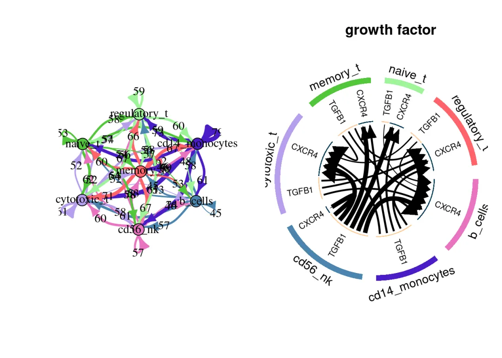
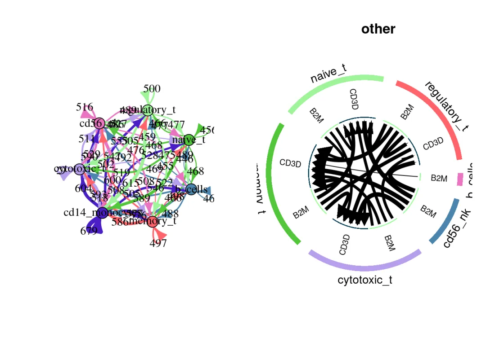
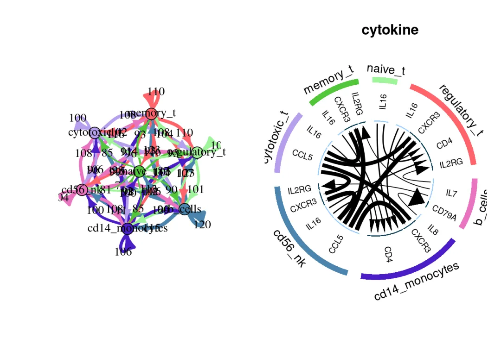
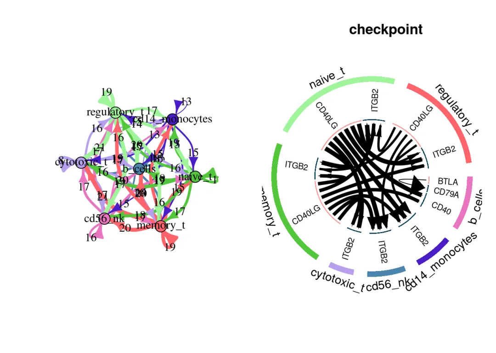
res<-res[order(res$cell_from_mean_exprs*res$cell_to_mean_exprs,decreasing=T),][1:20,]
NetView(res,col=cell_col,vertex.label.cex=1,arrow.width=1,edge.max.width=5)
## IGRAPH 8c7fedd DN-- 6 20 --
## + attr: name (v/c), size (v/n), color (v/c), label.color (v/c),
## | label.cex (v/n), n (e/n), label (e/n), width (e/n), arrow.width
## | (e/n), label.color (e/c), label.cex (e/n), color (e/c), loop.angle
## | (e/n)
## + edges from 8c7fedd (vertex names):
## [1] b_cells ->memory_t cd56_nk ->cytotoxic_t
## [3] cd56_nk ->memory_t cd56_nk ->naive_t
## [5] cd56_nk ->regulatory_t cytotoxic_t->cytotoxic_t
## [7] cytotoxic_t->memory_t cytotoxic_t->naive_t
## [9] cytotoxic_t->regulatory_t memory_t ->cytotoxic_t
## + ... omitted several edges
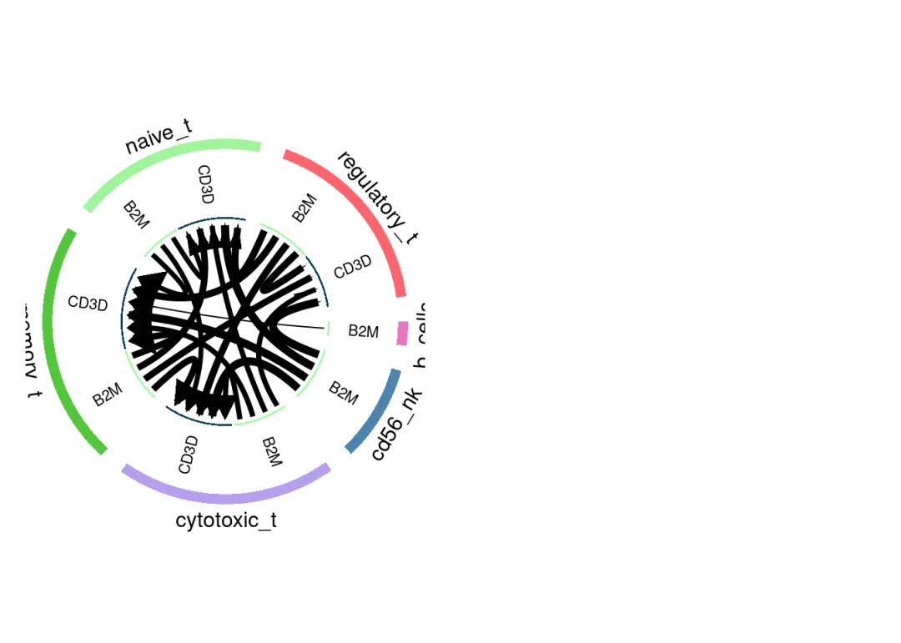
5、分组间的差异间筛选配受体
*
library(dplyr)
-
-
- *
-
# 这里作者随机生成了细胞的分组，用于对比计算：data<-data %>% mutate(compare_group=sample(2,nrow(data),replace=TRUE))# 这时data数据的最后一列就生成了对比的分组：data[1:4,(ncol(data)-4) : ncol(data)]
## CU459201.1 AC002321.2 AC002321.1 cell_type compare_group
## 1506 0 0 0 cd56_nk 1
## 1502 0 0 0 cd14_monocytes 2
## 1060 0 0 0 cd56_nk 2
## 1098 0 0 0 b_cells 2
-
-
- *
-
# 计算regulatory T cells在2组、1组之间的差异基因deg_t<-DEG(data %>% filter(cell_type=='regulatory_t'), method='Wilcox',contrast=c(2,1))head(deg_t)
## gene cell_type logFC p.value q.value
## 1 MALAT1 regulatory_t 1e-04 NA NA
## 2 RPL13 regulatory_t 1e-04 NA NA
## 3 RPS2 regulatory_t 1e-04 NA NA
## 4 RPL10 regulatory_t 1e-04 NA NA
## 5 B2M regulatory_t 1e-04 NA NA
## 6 RPL13A regulatory_t 1e-04 NA NA
-
-
- *
-
# 计算NK cells在2组、1组之间的差异基因deg_nk<-DEG(data %>% filter(cell_type=='cd56_nk'), method='Wilcox',contrast=c(2,1))head(deg_nk)
## gene cell_type logFC p.value q.value
## 1 MALAT1 cd56_nk 1e-04 NA NA
## 2 B2M cd56_nk 1e-04 NA NA
## 3 TMSB4X cd56_nk 1e-04 NA NA
## 4 GNLY cd56_nk 1e-04 NA NA
## 5 RPS27 cd56_nk 1e-04 NA NA
## 6 RPL10 cd56_nk 1e-04 NA NA
-
-
-
-
-
-
-
-
-
-
-
-
-
-
-
-
-
-
-
-
-
-
-
-
-
-
-
-
-
-
-
-
-
- *
-
-
-
-
-
-
-
-
-
-
-
-
-
-
-
-
-
-
-
-
-
-
-
-
-
-
-
-
-
-
-
-
# 在差异基因中筛选配受体对并进行可视化，流程与"在高表达基因中筛选配受体对"部分基本一致：par(mfrow=c(1,2))res<-NULLfor(comm_type in comm_list){ # 通过DEG筛选配受体对： res_cat<-FindLR(deg_t,deg_nk,datatype='DEG',comm_type=comm_type)
# 按照配体平均表达量与受体平均表达量的乘积对配受体对数据进行排序： res_cat<-res_cat[order(res_cat$cell_from_logFC*res_cat$cell_to_logFC,decreasing=T),]
# 看一下配受体对数据格式： res_cat
# 选择top10进行可视化： if(nrow(res_cat)==0){ next }else if(nrow(res_cat>=10)){ LRPlot(res_cat[1:10,],datatype='DEG',cell_col=cell_col,link.arr.lwd=res_cat$cell_from_logFC[1:10],link.arr.width=res_cat$cell_to_logFC[1:10]) }else{ LRPlot(res_cat,datatype='DEG',cell_col=cell_col,link.arr.lwd=res_cat$cell_from_logFC,link.arr.width=res_cat$cell_to_logFC) } NetView(res_cat,col=cell_col,vertex.label.cex=1,arrow.width=1,edge.max.width=7) title(comm_type) res<-rbind(res,res_cat)}if(is.null(res)){ print('No significant pairs found')}else if(nrow(res)>=10){ res<-res[order(res$cell_from_logFC*res$cell_to_logFC,decreasing=T),][1:10,] NetView(res,col=cell_col,vertex.label.cex=1,arrow.width=1,edge.max.width=5) LRPlot(res[1:10,],datatype='DEG',cell_col=cell_col,link.arr.lwd=res$cell_from_logFC[1:10],link.arr.width=res$cell_to_logFC[1:10])}else{ NetView(res,col=cell_col,vertex.label.cex=1,arrow.width=1,edge.max.width=5) LRPlot(res,datatype='DEG',cell_col=cell_col,link.arr.lwd=res$cell_from_logFC,link.arr.width=res$cell_to_logFC)}
## [1] "No significant pairs found"
# 因为作者是随机分配的比较组，因此并没有发现具有组间差异的配受体对，也算是符合情境了
二、以Seurat对象开始的数据实战
1、测试数据
这个数据是我们此前用于单细胞图片改造计划的测试数据。数据来源为小鼠肾脏，细胞数量、分组较多，非常适合用来演示教程。正好我们以此来演示由 Seurat对象开始的数据应该如何进行iTALK分析。
*
library(Seurat)
- *
scRNA <- readRDS('data/iri.intergrate.rds')scRNA
## An object of class Seurat
## 29133 features across 126578 samples within 2 assays
## Active assay: RNA (27133 features, 0 variable features)
## 2 layers present: counts, data
## 1 other assay present: integrated
## 3 dimensional reductions calculated: pca, umap, tsne
- *
# 看一下数据概况 DimPlot(scRNA)
## Rasterizing points since number of points exceeds 100,000.
## To disable this behavior set `raster=FALSE`
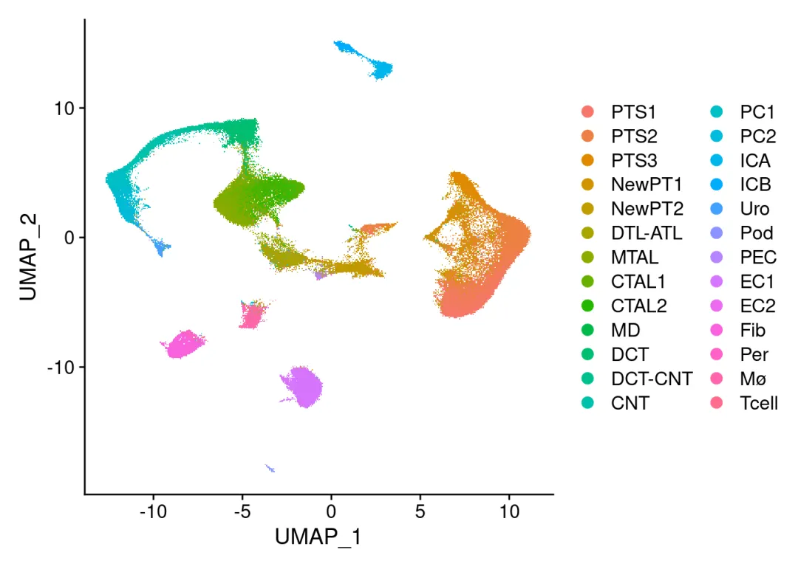
- *
# 数据的注释信息：names(scRNA@meta.data)
## [1] "orig.ident" "nCount_RNA" "nFeature_RNA" "Group" "Replicates"
## [6] "celltype"
-
-
-
-
-
-
-
-
-
-
- *
-
-
-
-
-
-
-
-
-
# 细胞数量太多大家分析起来可能比较困难# 我们按照每种细胞类型抽500个细胞# 取出细胞类型独特值：cell_cluster <- unique(scRNA$celltype)# 循环获取每种细胞类型对应的barcode：my_cell <- lapply(cell_cluster, function(run_cell) { rows <- which(scRNA$celltype == run_cell) sampled_rows <- sample(rows, min(500, length(rows))) colnames(scRNA)[sampled_rows]}) %>% unlist()scRNA <- scRNA[,my_cell]table(scRNA$celltype)
##
## CNT CTAL1 CTAL2 DCT DCT-CNT DTL-ATL EC1 EC2 Fib ICA
## 500 500 500 500 500 500 500 434 500 500
## ICB MD Mø MTAL NewPT1 NewPT2 PC1 PC2 PEC Per
## 500 155 500 500 500 500 500 500 500 397
## Pod PTS1 PTS2 PTS3 Tcell Uro
## 500 500 500 500 500 500
*
ncol(scRNA)
## [1] 12486
现在我们的数据只有一万多个细胞，相信足够大家完成后面的分析
- *
# 获取count数据，即作者演示流程中的data数据data <- GetAssayData(scRNA,layer = 'counts',assay = 'RNA') %>% as.data.frame()
## Warning in asMethod(object): sparse->dense coercion: allocating vector of size
## 2.5 GiB
-
-
- *
-
# 转置一下，保证列名为基因名：data <- t(data)# 这个数据中只包含表达量，未包含注释：data[1:4,1:4]
## Gnai3 Pbsn Cdc45 Scml2
## IRIsham1b1_AAAGTAGCAATGGTCT 0 0 0 0
## IRIsham1b1_AAAGTAGTCTTGCAAG 1 0 0 0
## IRIsham1b1_AAATGCCGTAGCGCTC 1 0 0 0
## IRIsham1b1_AACACGTCAAACTGTC 0 0 0 0
-
-
-
-
-
- *
-
-
-
-
# 添加细胞注释至最后一列：# 使用$符号添加列（确保行名与细胞ID匹配）# 将注释转为数据框，然后按行名合并celltype_df <- data.frame(cell_type = scRNA$celltype, row.names = colnames(scRNA))data <- cbind(data, celltype_df[rownames(data), , drop = FALSE])# 验证head(data[, c(1:4, ncol(data))])
## Gnai3 Pbsn Cdc45 Scml2 cell_type
## IRIsham1b1_AAAGTAGCAATGGTCT 0 0 0 0 Per
## IRIsham1b1_AAAGTAGTCTTGCAAG 1 0 0 0 Mø
## IRIsham1b1_AAATGCCGTAGCGCTC 1 0 0 0 CTAL2
## IRIsham1b1_AACACGTCAAACTGTC 0 0 0 0 PC1
## IRIsham1b1_AACACGTGTCCAAGTT 0 0 0 0 PTS2
## IRIsham1b1_AACCATGAGCCCAGCT 0 0 0 0 EC1
2、筛选高表达基因
-
-
-
-
- *
-
-
-
# 注意，细胞注释那一列的列名必须要是'cell_type'highly_exprs_genes<-rawParse(data,top_genes=50,stats='mean')# iTALK只有人类通讯数据的内置数据集，这里可以来一步人鼠的同源转化。如果你手里的本来就是人类数据，请忽略这一步。# 安装并加载包library(nichenetr)highly_exprs_genes$gene <- nichenetr::convert_mouse_to_human_symbols(symbols = highly_exprs_genes$gene)
3、在高表达基因中筛选配受体对
-
-
-
-
- *
-
-
-
# 细胞通讯类型：comm_list<-c('growth factor','other','cytokine','checkpoint')# 取出细胞类型独特值向量：unique_ct <- unique(data$cell_type)# 看一下细胞类型数量： length(unique_ct)
## [1] 26
-
-
-
-
-
-
-
-
-
-
-
-
-
-
- *
-
-
-
-
-
-
-
-
-
-
-
-
-
library(ggsci)# ggci教程可见：https://mp.weixin.qq.com/s/08vv0nuQVBUiyTTsxWYpXgcell_col<-structure(c(pal_aaas()(8),pal_npg()(8),pal_lancet()(8),pal_nejm()(8)), names=unique(data$cell_type))par(mfrow=c(1,2))res<-NULL# 训话在每种细胞通讯类型中寻找配受体对for(comm_type in comm_list){ res_cat<-FindLR(highly_exprs_genes,datatype='mean count',comm_type=comm_type) res_cat<-res_cat[order(res_cat$cell_from_mean_exprs*res_cat$cell_to_mean_exprs,decreasing=T),] # 可视化： NetView(res_cat,col=cell_col,vertex.label.cex=1,arrow.width=1,edge.max.width=5) # 筛选Top10进行可视化 LRPlot(res_cat[1:20,],datatype='mean count',cell_col=cell_col,link.arr.lwd=res_cat$cell_from_mean_exprs[1:20],link.arr.width=res_cat$cell_to_mean_exprs[1:20]) title(comm_type) res<-rbind(res,res_cat)}
看的出来互作数量还是挺多的，大家可以把图片再拉大点，这里只展示循环中的一张：
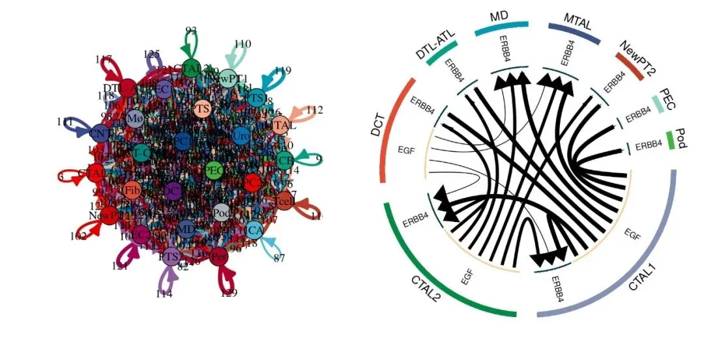
-
- *
res<-res[order(res$cell_from_mean_exprs*res$cell_to_mean_exprs,decreasing=T),][1:20,]# NetView(res,col=cell_col,vertex.label.cex=1,arrow.width=1,edge.max.width=5)# 这一行编译时会失败，但是在Rtsudio中是可以运行的，大家可以自行运行尝试一下LRPlot(res[1:20,],datatype='mean count',cell_col=cell_col,link.arr.lwd=res$cell_from_mean_exprs[1:20],link.arr.width=res$cell_to_mean_exprs[1:20])
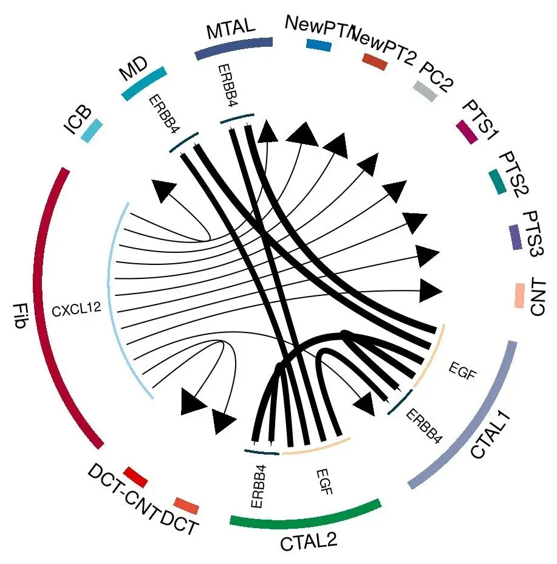
4、在差异基因中筛选配受体对
-
-
-
- *
-
-
# 把Group变量转换为数值型，并添加到data数据中：data$compare_group <- as.numeric(factor(scRNA$Group, levels = c("Control", "4hours", "12hours", "2days" ,"14days", "6weeks") )) - 1# 看一下Group都包含哪些值：unique(data$compare_group)
## [1] 0 1 2 3 4 5
-
-
-
-
-
-
-
-
-
-
-
-
-
-
-
-
-
-
-
-
-
-
- *
-
-
-
-
-
-
-
-
-
-
-
-
-
-
-
-
-
-
-
-
-
# 计算纤维化细胞在'Control'（对应数字0）与“6weeks”（对应数字5）之间的差异基因：deg_Fib<-DEG(data %>% filter((cell_type=='Fib' )& (compare_group %in% c(0,5))), method='Wilcox',# 差异计算方法，可选择Wilcox、DESeq2、SCDE、monocle、edgeR、DESingle、MAST中的一种，除了Wilcox外，其它算法的计算时间会非常长，甚至作者会提醒你可以先去喝一下咖啡："Warning: It may take a long time. You can go and brew a cup of coffee..." contrast=c(0,5))# 比较的分组，这里只接受数值型，即实际对应 Control vs 6weeks# 同样需要进行同源替换，若你的数据本来就是人类数据，可忽略下面的代码：library(nichenetr)deg_Fib$gene <- nichenetr::convert_mouse_to_human_symbols(symbols = deg_Fib$gene)par(mfrow=c(1,2))res<-NULLfor(comm_type in comm_list){ res_cat<-FindLR(deg_Fib,datatype='DEG',comm_type=comm_type) res_cat<-res_cat[order(res_cat$cell_from_logFC*res_cat$cell_to_logFC,decreasing=T),] #plot by ligand category if(nrow(res_cat)==0){ next }else if(nrow(res_cat)>=10){ LRPlot(res_cat[1:10,],datatype='DEG',cell_col=cell_col,link.arr.lwd=res_cat$cell_from_logFC[1:10],link.arr.width=res_cat$cell_to_logFC[1:10]) }else{ LRPlot(res_cat,datatype='DEG',cell_col=cell_col,link.arr.lwd=res_cat$cell_from_logFC,link.arr.width=res_cat$cell_to_logFC) } NetView(res_cat,col=cell_col,vertex.label.cex=1,arrow.width=1,edge.max.width=5) title(comm_type) res<-rbind(res,res_cat)}
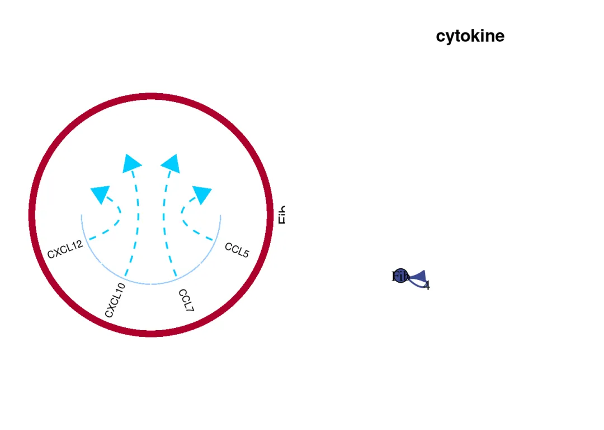
-
-
-
-
-
-
-
-
- *
-
-
-
-
-
-
-
if(is.null(res)){ print('No significant pairs found')}else if(nrow(res)>=20){ res<-res[order(res$cell_from_logFC*res$cell_to_logFC,decreasing=T),][1:20,] NetView(res,col=cell_col,vertex.label.cex=1,arrow.width=1,edge.max.width=5) LRPlot(res[1:20,],datatype='DEG',cell_col=cell_col,link.arr.lwd=res$cell_from_logFC[1:20],link.arr.width=res$cell_to_logFC[1:20])}else{ NetView(res,col=cell_col,vertex.label.cex=1,arrow.width=1,edge.max.width=5) LRPlot(res,datatype='DEG',cell_col=cell_col,link.arr.lwd=res$cell_from_logFC,link.arr.width=res$cell_to_logFC)}
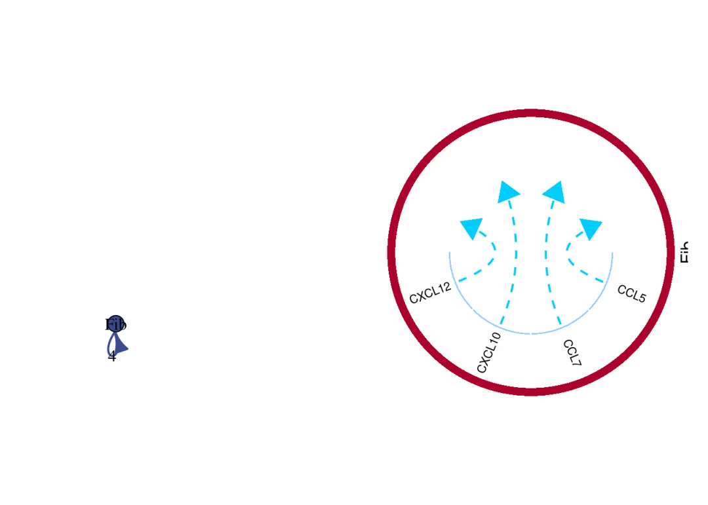
5、循环输出可视化结果
res中包含了细胞通讯预测的结果，可以查看并输出：
*
head(res)
## ligand receptor cell_from_logFC cell_from_q.value cell_from cell_to_logFC
## 42 CCL5 <NA> 1e-04 NA Fib -1.093576
## 1616 CCL7 <NA> 1e-04 NA Fib -1.093576
## 4764 CXCL10 <NA> 1e-04 NA Fib -1.093576
## 6338 CXCL12 <NA> 1e-04 NA Fib -1.093576
## cell_to_q.value cell_to comm_type
## 42 7.824353e-09 Fib cytokine
## 1616 7.824353e-09 Fib cytokine
## 4764 7.824353e-09 Fib cytokine
## 6338 7.824353e-09 Fib cytokine
*
dir.create('output')
## Warning in dir.create("output"): 'output' already exists
*
write.csv('output/res.csv')
## "","x"
## "1","output/res.csv"
- *
# iTALK主要有这两种可视化方法dir.create('output/NetView/')
## Warning in dir.create("output/NetView/"): 'output/NetView' already exists
*
dir.create('output/LRPlot/')
## Warning in dir.create("output/LRPlot/"): 'output/LRPlot' already exists
-
-
-
-
-
-
-
-
-
-
-
-
- *
-
-
-
-
-
-
-
-
-
-
-
# 循环输出每种ligand对应的图像：for (run_ligand in unique(res$ligand )) { pdf(file = paste0('output/NetView/',run_ligand,'.pdf')) NetView(filter(res, ligand == run_ligand),col=cell_col,vertex.label.cex=1,arrow.width=1,edge.max.width=5) dev.off()
pdf(file = paste0('output/LRPlot/',run_ligand,'.pdf')) LRPlot(filter(res, ligand == run_ligand),datatype='DEG',cell_col=cell_col,link.arr.lwd=filter(res, ligand == run_ligand) %>% pull(cell_from_logFC),link.arr.width=filter(res, ligand == run_ligand) %>% pull(cell_from_logFC)) dev.off()
}# 看一下输出的文件：list.files('output/NetView/')
## [1] "CALM1.pdf" "CALM3.pdf" "CCL5.pdf" "CCL7.pdf" "CXCL10.pdf"
## [6] "CXCL12.pdf" "SLIT3.pdf"
本教程用到的环境
大家如果遇到报错，请先检查一下各包的版本是否与我一致：
*
sessionInfo()
## R version 4.4.2 (2024-10-31)
## Platform: x86_64-pc-linux-gnu
##
## Matrix products: default
## BLAS: /usr/lib/x86_64-linux-gnu/openblas-pthread/libblas.so.3
## LAPACK: /usr/lib/x86_64-linux-gnu/openblas-pthread/liblapack.so.3; LAPACK version 3.9.0
##
## locale:
## [1] LC_CTYPE=en_US.UTF-8 LC_NUMERIC=C
## [3] LC_TIME=en_US.UTF-8 LC_COLLATE=en_US.UTF-8
## [5] LC_MONETARY=en_US.UTF-8 LC_MESSAGES=en_US.UTF-8
## [7] LC_PAPER=en_US.UTF-8 LC_NAME=C
## [9] LC_ADDRESS=C LC_TELEPHONE=C
## [11] LC_MEASUREMENT=en_US.UTF-8 LC_IDENTIFICATION=C
##
## time zone: Etc/UTC
## tzcode source: system (glibc)
##
## attached base packages:
## [1] stats graphics grDevices utils datasets methods base
##
## other attached packages:
## [1] ggsci_3.2.0 nichenetr_1.1.0 Seurat_5.2.1 SeuratObject_5.0.2
## [5] sp_2.2-0 dplyr_1.1.4 iTALK_0.1.0 devtools_2.4.5
## [9] usethis_3.1.0
##
## loaded via a namespace (and not attached):
## [1] IRanges_2.40.1 randomcoloR_1.1.0.1
## [3] airports_0.1.0 progress_1.2.3
## [5] urlchecker_1.0.1 nnet_7.3-20
## [7] goftest_1.2-3 gamlss_5.4-22
## [9] Biostrings_2.74.1 vctrs_0.6.5
## [11] spatstat.random_3.3-2 proxy_0.4-27
## [13] digest_0.6.37 png_0.1-8
## [15] shape_1.4.6.1 ggrepel_0.9.6
## [17] deldir_2.0-4 parallelly_1.42.0
## [19] combinat_0.0-8 MASS_7.3-64
## [21] reshape2_1.4.4 MAST_1.32.0
## [23] RcppArmadillo_14.2.2-1 httpuv_1.6.15
## [25] foreach_1.5.2 BiocGenerics_0.52.0
## [27] withr_3.0.2 cherryblossom_0.1.0
## [29] xfun_0.50 ellipsis_0.3.2
## [31] survival_3.8-3 memoise_2.0.1
## [33] MatrixModels_0.5-3 profvis_0.4.0
## [35] zoo_1.8-12 GlobalOptions_0.1.2
## [37] V8_6.0.0 pbapply_1.7-2
## [39] Formula_1.2-5 usdata_0.3.1
## [41] prettyunits_1.2.0 Lmoments_1.3-1
## [43] KEGGREST_1.46.0 promises_1.3.2
## [45] httr_1.4.7 globals_0.16.3
## [47] fitdistrplus_1.2-2 rstudioapi_0.17.1
## [49] UCSC.utils_1.2.0 miniUI_0.1.1.1
## [51] generics_0.1.3 base64enc_0.1-3
## [53] curl_6.2.0 S4Vectors_0.44.0
## [55] zlibbioc_1.52.0 randomForest_4.7-1.2
## [57] polyclip_1.10-7 GenomeInfoDbData_1.2.13
## [59] SparseArray_1.6.0 doParallel_1.0.17
## [61] xtable_1.8-4 stringr_1.5.1
## [63] evaluate_1.0.3 S4Arrays_1.6.0
## [65] hms_1.1.3 GenomicRanges_1.58.0
## [67] irlba_2.3.5.1 visNetwork_2.1.2
## [69] colorspace_2.1-1 ROCR_1.0-11
## [71] reticulate_1.40.0 spatstat.data_3.1-4
## [73] flexmix_2.3-19 magrittr_2.0.3
## [75] lmtest_0.9-40 readr_2.1.5
## [77] later_1.4.1 viridis_0.6.5
## [79] modeltools_0.2-23 lattice_0.22-6
## [81] spatstat.geom_3.3-5 future.apply_1.11.3
## [83] genefilter_1.84.0 SparseM_1.84-2
## [85] scattermore_1.2 XML_3.99-0.18
## [87] cowplot_1.1.3 matrixStats_1.5.0
## [89] RcppAnnoy_0.0.22 Hmisc_5.2-2
## [91] class_7.3-23 pillar_1.10.1
## [93] nlme_3.1-167 iterators_1.0.14
## [95] caTools_1.18.3 compiler_4.4.2
## [97] RSpectra_0.16-2 stringi_1.8.4
## [99] gower_1.0.2 tensor_1.5
## [101] SummarizedExperiment_1.36.0 lubridate_1.9.4
## [103] plyr_1.8.9 crayon_1.5.3
## [105] abind_1.4-8 locfit_1.5-9.11
## [107] bit_4.5.0.1 sandwich_3.1-1
## [109] pcaMethods_1.94.0 codetools_0.2-20
## [111] distillery_1.2-2 recipes_1.1.0
## [113] bslib_0.9.0 slam_0.1-55
## [115] e1071_1.7-16 GetoptLong_1.0.5
## [117] plotly_4.10.4 monocle_2.34.0
## [119] mime_0.12 leidenbase_0.1.31
## [121] splines_4.4.2 circlize_0.4.16
## [123] Rcpp_1.0.14 fastDummies_1.7.5
## [125] quantreg_5.99.1 brew_1.0-10
## [127] maxLik_1.5-2.1 knitr_1.49
## [129] blob_1.2.4 clue_0.3-66
## [131] fs_1.6.5 checkmate_2.3.2
## [133] listenv_0.9.1 pscl_1.5.9
## [135] pkgbuild_1.4.6 tibble_3.2.1
## [137] Matrix_1.7-2 statmod_1.5.0
## [139] tzdb_0.4.0 pkgconfig_2.0.3
## [141] pheatmap_1.0.12 network_1.19.0
## [143] tools_4.4.2 Rook_1.2
## [145] cachem_1.1.0 RSQLite_2.3.9
## [147] viridisLite_0.4.2 DBI_1.2.3
## [149] numDeriv_2016.8-1.1 fastmap_1.2.0
## [151] rmarkdown_2.29 scales_1.3.0
## [153] grid_4.4.2 ica_1.0-3
## [155] geneplotter_1.84.0 sass_0.4.9
## [157] patchwork_1.3.0 coda_0.19-4.1
## [159] dotCall64_1.2 RANN_2.6.2
## [161] rpart_4.1.24 farver_2.1.2
## [163] mgcv_1.9-1 yaml_2.3.10
## [165] VGAM_1.1-12 foreign_0.8-88
## [167] DiagrammeR_1.0.11 MatrixGenerics_1.18.1
## [169] cli_3.6.3 purrr_1.0.2
## [171] stats4_4.4.2 lifecycle_1.0.4
## [173] caret_7.0-1 uwot_0.2.2
## [175] Biobase_2.66.0 mvtnorm_1.3-3
## [177] backports_1.5.0 lava_1.8.1
## [179] sessioninfo_1.2.2 BiocParallel_1.40.0
## [181] annotate_1.84.0 timechange_0.3.0
## [183] gtable_0.3.6 rjson_0.2.23
## [185] ggridges_0.5.6 gamlss.dist_6.1-1
## [187] progressr_0.15.1 pROC_1.18.5
## [189] parallel_4.4.2 limma_3.62.2
## [191] jsonlite_1.8.9 scde_2.30.0
## [193] edgeR_4.4.1 miscTools_0.6-28
## [195] RcppHNSW_0.6.0 bitops_1.0-9
## [197] ggplot2_3.5.1 bit64_4.6.0-1
## [199] Rtsne_0.17 openintro_2.5.0
## [201] spatstat.utils_3.1-2 bdsmatrix_1.3-7
## [203] jquerylib_0.1.4 spatstat.univar_3.1-1
## [205] timeDate_4041.110 lazyeval_0.2.2
## [207] shiny_1.10.0 htmltools_0.5.8.1
## [209] DDRTree_0.1.5 sctransform_0.4.1
## [211] glue_1.8.0 spam_2.11-1
## [213] XVector_0.46.0 RCurl_1.98-1.16
## [215] extRemes_2.2 RMTstat_0.3.1
## [217] gridExtra_2.3 igraph_2.1.4
## [219] R6_2.5.1 fdrtool_1.2.18
## [221] tidyr_1.3.1 DESeq2_1.36.0
## [223] SingleCellExperiment_1.28.1 labeling_0.4.3
## [225] HSMMSingleCell_1.26.0 cluster_2.1.8
## [227] bbmle_1.0.25.1 pkgload_1.4.0
## [229] gamlss.data_6.0-6 DEsingle_1.22.0
## [231] GenomeInfoDb_1.42.1 ipred_0.9-15
## [233] statnet.common_4.11.0 DelayedArray_0.32.0
## [235] tidyselect_1.2.1 htmlTable_2.4.3
## [237] AnnotationDbi_1.68.0 future_1.34.0
## [239] ModelMetrics_1.2.2.2 fastICA_1.2-7
## [241] munsell_0.5.1 KernSmooth_2.23-26
## [243] data.table_1.16.4 ComplexHeatmap_2.12.1
## [245] htmlwidgets_1.6.4 RColorBrewer_1.1-3
## [247] rlang_1.1.5 spatstat.sparse_3.1-0
## [249] spatstat.explore_3.3-4 remotes_2.5.0
## [251] Cairo_1.6-1 hardhat_1.4.0
## [253] prodlim_2024.06.25

如何联系我们

 留一个领取资料、免费两周学习版服务器的微信号[Biomamba_zhushou]，方便各位随时交流。同时我们也构建了交流群矩阵，欢迎大家入群讨论。
大家可以阅读完这几篇之后添加给生信入门初学者的小贴士
如何搜索公众号过往发布内容
留一个领取资料、免费两周学习版服务器的微信号[Biomamba_zhushou]，方便各位随时交流。同时我们也构建了交流群矩阵，欢迎大家入群讨论。
大家可以阅读完这几篇之后添加给生信入门初学者的小贴士
如何搜索公众号过往发布内容
已有生信基地联系方式的同学无需重复添加

 您点的每个赞和在看，我都认真当成了喜欢
您点的每个赞和在看，我都认真当成了喜欢